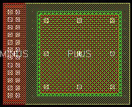
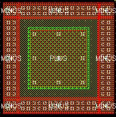

c3t_mim bottom contacts property
these layouts show the effect of varying the bottom contacts property for an example c3t_mim cap
bulk = n (this is the default)
bottom contacts = l

bottom contacts = lbrt

bottom contacts = lbrt and bulk = lbrt